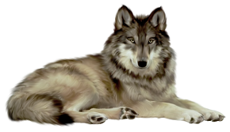
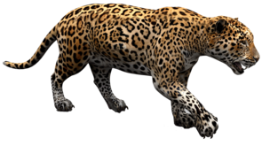
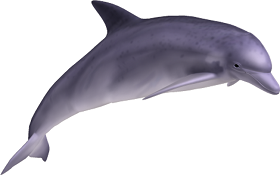

Animal- Wolf
- Wolves are native to North America and they are the largest members of the dog family.
- Wolves are legendary because of their spine-tingling howl, which they use to communicate.
- Wolves live and hunt in packs. They are known to roam large distances – as much as 20km in a single day. Wolf packs in the far North often travel hundreds of kilometres each year as they follow migrating herds..

Animal- Jaguar
- The jaguar is the 3rd largest of the big cats after the tiger and the lion and it is the largest of all the big cats in the Americas.
- The jaguar's preferred habitat is dense rainforest, but they are also found across other forested areas and open plains and they are only found in the Americas.
- Like the tiger, jaguars enjoy water and are good at swimming.

Animal- Dolphin
- There are nearly 40 species of dolphins!
- Female dolphins are called cows, males are called bulls and young dolphins are called calves.
- Compared to other animals, dolphins are believed to be very intelligent.